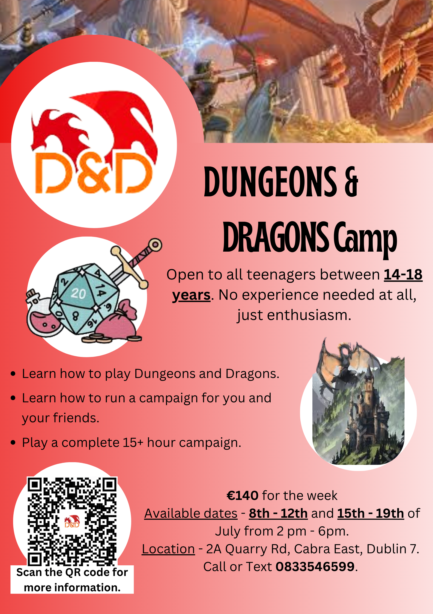
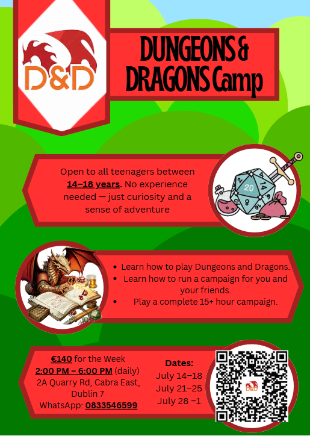

About me
Who I am, what I care about, and what I get up to.
I'm Cillian Cooke, a Computer Science student at Trinity College Dublin. I build things — not code for its own sake, but real solutions to real problems. If I spot something worth making, I build it.
Outside of tech: I founded a D&D summer camp at 17, play football for Leinster Celtic, juggle with Trinity's Circus Society, and spent three weeks volunteering at rural schools in Tanzania. Selected for the Centre for Talented Youth Ireland programme.
Location
Dublin, Ireland
Education
BSc/MSc Computer Science — Trinity College Dublin (2025–2030)
Languages & Tools
- Python
- TypeScript
- Dart
- JavaScript
- HTML/CSS
- React
- Flutter
- FastAPI
- Git
- Figma
CV


Dungeons & Dragons is one of my favourite creative outlets. I enjoy worldbuilding, storytelling, and guiding groups through adventures.
- Dungeon Master for three years — I build campaigns, characters, and immersive storylines.
- Founder of a D&D summer camp — I planned sessions and helped others discover roleplaying.
- I advertised, organised, and ran the whole camp myself at age 17.
- It combines creativity, collaboration, and improvisation in a way I love.
D&D Summer Camp
Run independently at 17
I designed and ran a multi-week Dungeons & Dragons summer camp for new and experienced players. The camp was structured around guided campaigns, creative problem-solving, and collaborative storytelling. Each day featured different sessions, ranging from character creation workshops to full immersive campaign play.
How I organised it
- Designed each session and the full camp timetable with progression and variety.
- Created marketing materials and advertised through social media and local flyers.
- Handled all bookings, registration, payments, and camp logistics completely solo.
- Led new players through a full 15+ hour introductory campaign.
- Managed group dynamics and ensured all participants had an inclusive, welcoming experience.


Campaigns I am Proud of
Campaign I — The Living Canvas
A world dreamed into being
8 months
Step inside the mind of a Sacred Artist — a god who paints reality itself. Inspired by the hauntingly beautiful post-apocalyptic visions of Simon Stålenhag, this world is one where rusting machines breathe and move with something disturbingly close to life. Organic circuitry pulses beneath metal flesh. Wetlands hum with forgotten technology.
But the landscape is never fixed. The world shifts with the artist's mood — storm-grey desolation when he despairs, amber warmth when wonder stirs in him again. To navigate it, players must learn to read not the terrain, but the soul behind it.
Campaign II — The Next Stage
A race through the poetry of dying
7 months
Death, in the world of Norman Alperson, is not a wall — it is a door. A poet of extraordinary power, Norman grants new stages of existence to those whose lives have reached their natural fullness. Not an ending, but a transformation into something richer.
Players raced toward the Final Life — a heaven beyond all heavens — but the path demanded more than strength or cunning. Every trial was woven into verse. To advance, they had to feel the meaning hidden within the language, to move through metaphor as though it were terrain.
Original poems from this campaign live in the Poetry tab →
Overture I Every note is born equal
Every note is born equal — yet An artist must decide what note comes next. A choice that should never rest with one alone. Equality does not mean perfection.
Across this universe, infinite lives begin. Infinite lives end. And I, as an artist — as a lover — must choose but one. A choice made infinitely impossible.
With the concept of infinity, With a gesture most romantic, I will— Divide infinity to reach you, Until infinity becomes one.
And with that, Multiply one to infinity.
Undying Note III War is coming — maybe not in this life
War is coming — maybe not in this life, but definitely in the next.
Living is to fight; dying is to move on. Each stage grows, while you shrink.
A war shouldn’t be won with a thousand soldiers, but rather one right leader — one who unites, one who plays the perfect harmony between pain and growth.
War isn’t won with sticks and stones, but rather a series of notes — a chord juxtaposed with a lullaby.
So this fight may be over, but the war has just begun. To fight and die is the greatest sacrifice; to fight and live is to fight again.
Singularity IV Weightless in the eyes of progress
Weightless in the eyes of progress, Progress found in the event of no return.
Beyond the cliff of moments. For a God does not fear The concept of time.
The other side awaits. Patiently Aging the mortals. Like a clock ticking down its own demise. So shall you. A warrior with no urgency.
Is a hero with no purpose.
The Final Chapter XII It begins and ends with you
It begins and ends with you, My fallen angel bearing the golden ticket. A war to end all wars is not worth the blade If your soul wasn’t left to save.
This ticket to omnipotence is priceless, Yet exemption from battle is granted Along with the greatest honour. For you and you alone must choose —
A single champion.
A champion to lead us into war. And the war comes for us now, For a plague has taken root, Defence will only buy us time.
Questioning V Walking in circles; running from memories
Walking in circles; running from memories. Memories of nightmares. Nightmares that manifest to reality.
An endless cycle, building upon itself.
I never got to the heart of the problem, As I never learned to hold my breath.
How I apologise to myself with empty words. “Sorry” isn’t enough to put out a fire.
Stop looking in the eyes of others, As you share different worlds.
By walking through old memories, Each one slightly wrong.
A mirror placed in front of me, Still doesn’t reflect how I feel. In a world of good and evil. I feel left out.